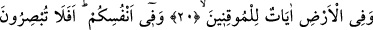
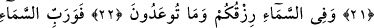
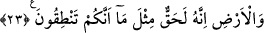

MÜMİNLER İÇİN YERYÜZÜNDE
ÂYETLER VARDIR
20. Kesin inananlar için yeryüzünde âyetler vardır.
21. Kendi nefislerinizde de öyle. Görmüyor musunuz?
22. Semada rızkınız ve size vaadedilen başka şeyler vardır.
23. Göğün ve yerin Rabbine andolsun ki bu vaad, sizin konuşmanız gibi kesin ve
gerçektir.
Kesin inananlar için yerde nice ibretler vardır. “Îkân”, şek ve şüphesiz olmak
demektir. Yâni kesin inananlar için yeryüzünde Sâni, Teâlâ’nın varlığına; ilim, kudret,
irâde ve vahdâniyetine, bir yaygı gibi yayılmış bol rahmetine işâret eden apaçık
alâmetler vardır. Yine yeryüzünün düz bölgelerinde dolaşanlar için yollar, tepe ve dağ
aralarında seyredenler için de menfezler/geçitler vardır. Yeryüzünde ova, dağ, kara,
deniz ve bunların mücâvir olduğu bölgeler, fışkıran pınarlar ve her cinsi barındıran
madenlerin yanı sıra çeşitli bitki filizleri ve çeşitli ağaç ile tadı ve kokusu farklı meyve
türleri mevcuddur. Ayrıca yeryüzünde, üzerinde yaşayanlara rahatlık verme ve destekte
bulunma maksadıyla menfaat ve maslahatları için tertib olunarak emirlerine sunulmuş
çok çeşitli hayvanlar bulunmaktadır.
el-Kelbî, âyette geçen “âyât: deliller, ibretler” lafzından muradın, yeryüzünde daha
önce yaşayıp geçmiş kavimlerin izlerinden “ibret tabloları” olduğu kanâatini
belirtmiştir.
et-Te’vîlâtü’n-Necmiyye’de ise “âyât: deliller, ibretler” lafzı hakkında şu açıklamalar
yapılır:
1. Yeryüzü her şeyi üzerinde taşıdığı gibi, “ârif-i mûkin” (kesin bir îmana sâhip ârif
kişi) de her bir kişiden gelen yükleri öylece yüklenir ve taşır. Kim, insanlardan gelen
herhangi bir yükü ağır bulur veya Allah’ın, kendisine doğru sevkettiği bir kulunu
görmekten bıkarsa, bu onun hakikatten uzak/gaflette oluşundan ve halkı tefrika gözüyle
mütâlaâ etmekten mahrum oluşundandır. Ehl-i hakâık, asla böyle bir sıfatla
sıfatlanmazlar.
2. Yeryüzü üzerine çerçöp atıldığı halde o bunları tahâvüle tâbi tutarak bunlardan
rengârenk çiçek, ot ve güller bitirir. Ârif de böyledir; o kendisine sunulan cefâ ve
eziyetleri sabırla yudumlar da bunlar neticesinde ondan çok yüce huylar ve tertemiz